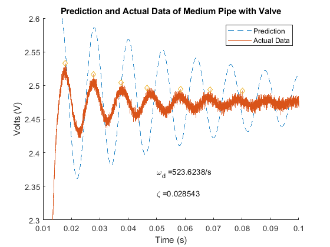

Contents
clear all
close all
Import Data
Header=29;
Small_Flood = importdata('SmallPipe_Flood.lvm','\t',Header);
Small_Balloon = importdata('SmallPipe_Balloon.lvm','\t',Header);
Medium_Flood = importdata('MediumPipe_Flood.lvm','\t',Header);
Medium_Balloon = importdata('MediumPipe_Balloon.lvm','\t',Header);
Long_Flood = importdata('LongPipe_Flood.lvm','\t',Header);
Long_Balloon = importdata('LongPipe_Balloon.lvm','\t',Header);
Time_Small_Flood = Small_Flood.data(:,1);
Time_Small_Balloon = Small_Balloon.data(:,1);
Time_Medium_Flood = Medium_Flood.data(:,1);
Time_Medium_Balloon = Medium_Balloon.data(:,1);
Time_Long_Flood = Long_Flood.data(:,1);
Time_Long_Balloon = Long_Balloon.data(:,1);
Voltage_Small_Flood = Small_Flood.data(:,2);
Voltage_Small_Balloon = Small_Balloon.data(:,2);
Voltage_Medium_Flood = Medium_Flood.data(:,2);
Voltage_Medium_Balloon = Medium_Balloon.data(:,2);
Voltage_Long_Flood = Long_Flood.data(:,2);
Voltage_Long_Balloon = Long_Balloon.data(:,2);
Flood Tests
T = Time_Small_Flood(2)-Time_Small_Flood(1);
Freq = 1/T;
Length = size(Voltage_Small_Flood);
Power_2 = 2^nextpow2(Length(1));
FFT = fft(Voltage_Small_Flood,Power_2)./Length(1);
Spaced_Points = Freq/2*linspace(0,1,Power_2/2+1);
FFT_A = 20*log10(abs(FFT(1:Power_2/2+1)));
Length_2 = length(Voltage_Small_Flood);
Freq_Reso_Flood_Small = 1/(Length_2*T);
a = 343;
l = .17;
V = l*pi*.0042^2;
Vt = 6.5*10^-8;
Damp_Natural_Freq_Small_Flood = a/(l*sqrt(0.5+(V/Vt)));
f1 = figure(1)
subplot(2,1,1)
plot (Time_Small_Flood,Voltage_Small_Flood);
title('Short Tube Flood Valve Response')
xlabel ('Time (sec)')
ylabel ('Volts (V)')
text(.016,2.43,strcat('Resolution =',num2str(Freq_Reso_Flood_Small),'/s'))
text(.016,2.41,strcat('Damped Natural Frequency = ',num2str(Damp_Natural_Freq_Small_Flood),' Hz'))
xlim([0.01,0.03])
subplot(2,1,2)
semilogx(Spaced_Points,FFT_A);
hold on
plot(35.1,-29.14,'d')
text(35.1,-15,'f = 35.1 Hz')
title('Single Sided Amplitude Spectrum')
xlabel ('Frequency (Hz)')
ylabel ('Log Magnitude (dBv)')
T = Time_Medium_Flood(2)-Time_Medium_Flood(1);
Freq = 1/T;
Length = size(Voltage_Medium_Flood);
Power_2 = 2^nextpow2(Length(1));
FFT = fft(Voltage_Medium_Flood,Power_2)./Length(1);
Spaced_Points = Freq/2*linspace(0,1,Power_2/2+1);
FFT_A = 20*log10(abs(FFT(1:Power_2/2+1)));
Length_2 = length(Voltage_Medium_Flood);
Freq_Reso_Flood_Medium = 1/(Length_2*T);
a = 343;
l = .795;
V = l*pi*.0022^2;
Vt = 6.5*10^-8;
Damp_Natural_Freq_Medium_Flood = a/(l*sqrt(0.5+(V/Vt)));
f2 = figure(2)
subplot(2,1,1)
plot (Time_Medium_Flood,Voltage_Medium_Flood);
title('Medium Tube Flood Valve Response')
xlabel ('Time (sec)')
ylabel ('Volts (V)')
text(.035,2.44,strcat('Resolution =',num2str(Freq_Reso_Flood_Medium),'/s'))
text(.035,2.42,strcat('Damped Natural Frequency = ',num2str(Damp_Natural_Freq_Medium_Flood),'Hz'))
xlim([0.015,0.06])
subplot(2,1,2)
semilogx(Spaced_Points,FFT_A);
hold on
plot(25.9,-25.52,'d')
text(25.9,-10,'f = 25.9 Hz')
title('Single Sided Amplitude Spectrum')
xlabel ('Frequency (Hz)')
ylabel ('Log Magnitude (dBv)')
T = Time_Long_Flood(2)-Time_Long_Flood(1);
Freq = 1/T;
Length = size(Voltage_Small_Flood);
Power_2 = 2^nextpow2(Length(1));
FFT = fft(Voltage_Small_Flood,Power_2)./Length(1);
Spaced_Points = Freq/2*linspace(0,1,Power_2/2+1);
FFT_A = 20*log10(abs(FFT(1:Power_2/2+1)));
Length_2 = length(Voltage_Long_Flood);
Freq_Reso_Flood_Long = 1/(Length_2*T);
a = 343;
l = 1.05;
V = l*pi*.0022^2;
Vt = 6.5*10^-8;
Damp_Natural_Freq_Long_Flood = a/(l*sqrt(0.5+(V/Vt)));
f3 = figure(3)
subplot(2,1,1)
plot (Time_Long_Flood,Voltage_Long_Flood);
title('Long Tube Flood Valve Response')
xlabel ('Time (sec)')
ylabel ('Volts (V)')
text(.038,2.57,strcat('Resolution =',num2str(Freq_Reso_Flood_Long),'/s'))
text(.038,2.54,strcat('Damped Natural Frequency = ',num2str(Damp_Natural_Freq_Long_Flood),'Hz'))
xlim([0.015,.07])
subplot(2,1,2)
semilogx(Spaced_Points,FFT_A);
hold on
plot(16.78,-20.82,'d')
text(25.78,-10,'f = 18.2 Hz')
title('Single Sided Amplitude Spectrum')
xlabel ('Frequency (Hz)')
ylabel ('Log Magnitude (dBv)')
f1 =
Figure (1) with properties:
Number: 1
Name: ''
Color: [0.9400 0.9400 0.9400]
Position: [488 342 560 420]
Units: 'pixels'
Use GET to show all properties
f2 =
Figure (2) with properties:
Number: 2
Name: ''
Color: [0.9400 0.9400 0.9400]
Position: [488 342 560 420]
Units: 'pixels'
Use GET to show all properties
f3 =
Figure (3) with properties:
Number: 3
Name: ''
Color: [0.9400 0.9400 0.9400]
Position: [488 342 560 420]
Units: 'pixels'
Use GET to show all properties
Balloon Tests
T = Time_Small_Balloon(2)-Time_Small_Balloon(1);
Freq = 1/T;
Length = size(Voltage_Small_Balloon);
Power_2 = 2^nextpow2(Length(1));
FFT = fft(Voltage_Small_Balloon,Power_2)./Length(1);
Spaced_Points = Freq/2*linspace(0,1,Power_2/2+1);
FFT_A = 20*log10(abs(FFT(1:Power_2/2+1)));
Length_2 = length(Voltage_Small_Balloon);
Freq_Reso_Balloon_Small = 1/(Length_2*T);
a = 343;
l = .17;
V = l*pi*.0042^2;
Vt = 6.5*10^-8;
Damp_Natural_Freq_Small_Balloon = a/(l*sqrt(0.5+(V/Vt)));
f4 = figure(4)
subplot(2,1,1)
plot (Time_Small_Balloon,Voltage_Small_Balloon);
title('Short Tube Balloon Response')
xlabel ('Time (sec)')
ylabel ('Volts (V)')
text(.015,-.03,strcat('Resolution =',num2str(Freq_Reso_Balloon_Small),'/s'))
text(.015,-.06,strcat('Damped Natural Frequency = ',num2str(Damp_Natural_Freq_Small_Balloon),'Hz'))
xlim([-.025,.075])
subplot(2,1,2)
semilogx(Spaced_Points,FFT_A);
hold on
plot(285,-63.6,'d')
text(285,-50,'f = 184 Hz')
title('Single Sided Amplitude Spectrum')
xlabel ('Frequency (Hz)')
ylabel ('Log Magnitude (dBv)')
T = Time_Medium_Balloon(2)-Time_Medium_Balloon(1);
Freq = 1/T;
Length = size(Voltage_Medium_Balloon);
Power_2 = 2^nextpow2(Length(1));
FFT = fft(Voltage_Medium_Balloon,Power_2)./Length(1);
Spaced_Points = Freq/2*linspace(0,1,Power_2/2+1);
FFT_A = 20*log10(abs(FFT(1:Power_2/2+1)));
Length_2 = length(Voltage_Medium_Balloon);
Freq_Reso_Balloon_Medium = 1/(Length_2*T);
a = 343;
l = .795;
Vt = l*pi*.0022^2;
V = 6.5*10^-8;
Damp_Natural_Freq_Medium_Balloon = a/(l*sqrt(0.5+(V/Vt)));
f5 = figure(5)
subplot(2,1,1)
plot (Time_Medium_Balloon,Voltage_Medium_Balloon);
title('Medium Tube Balloon Response')
xlabel ('Time (sec)')
ylabel ('Volts (V)')
text(.015,-.07,strcat('Resolution =',num2str(Freq_Reso_Balloon_Medium),'/s'))
text(.015,-.10,strcat('Damped Natural Frequency = ',num2str(Damp_Natural_Freq_Medium_Balloon),'Hz'))
xlim([-.025,.075])
subplot(2,1,2)
semilogx(Spaced_Points,FFT_A);
hold on
plot(420,-71.9,'d')
text(420,-60,'f = 550 Hz')
title('Single Sided Amplitude Spectrum')
xlabel ('Frequency (Hz)')
ylabel ('Log Magnitude (dBv)')
T = Time_Long_Balloon(2)-Time_Long_Balloon(1);
Freq = 1/T;
Length = size(Voltage_Small_Balloon);
Power_2 = 2^nextpow2(Length(1));
FFT = fft(Voltage_Small_Balloon,Power_2)./Length(1);
Spaced_Points = Freq/2*linspace(0,1,Power_2/2+1);
FFT_A = 20*log10(abs(FFT(1:Power_2/2+1)));
Length_2 = length(Voltage_Long_Balloon);
Freq_Reso_Balloon_Long = 1/(Length_2*T);
a = 343;
l = 1.05;
Vt = l*pi*.0022^2;
V = 6.5*10^-8;
Damp_Natural_Freq_Long_Balloon = a/(l*sqrt(0.5+(V/Vt)));
f6 = figure(6)
subplot(2,1,1)
plot (Time_Long_Balloon,Voltage_Small_Balloon);
title('Long Tube Balloon Response')
xlabel ('Time (sec)')
ylabel ('Volts (V)')
text(.015,-.05,strcat('Resolution =',num2str(Freq_Reso_Balloon_Long),'/s'))
text(.015,-.09,strcat('Damped Natural Frequency = ',num2str(Damp_Natural_Freq_Long_Balloon),'Hz'))
xlim([-.025,.075])
subplot(2,1,2)
semilogx(Spaced_Points,FFT_A);
hold on
plot(308,-62,'d')
text(308,-50,'f = 428 Hz')
title('Single Sided Amplitude Spectrum')
xlabel ('Frequency (Hz)')
ylabel ('Log Magnitude (dBv)')
f4 =
Figure (4) with properties:
Number: 4
Name: ''
Color: [0.9400 0.9400 0.9400]
Position: [488 342 560 420]
Units: 'pixels'
Use GET to show all properties
f5 =
Figure (5) with properties:
Number: 5
Name: ''
Color: [0.9400 0.9400 0.9400]
Position: [488 342 560 420]
Units: 'pixels'
Use GET to show all properties
f6 =
Figure (6) with properties:
Number: 6
Name: ''
Color: [0.9400 0.9400 0.9400]
Position: [488 342 560 420]
Units: 'pixels'
Use GET to show all properties
Peakfinder
Constant = 1;
[Volt_Locations_Small,Volt_Small]=peakfinder(Voltage_Small_Flood,Constant);
Damping_Ratio_Small_Flood = zeros(length(Volt_Small),1);
for n = 1:length(Volt_Small)-1
Period_Small = Time_Small_Flood(Volt_Locations_Small(n+1))-Time_Small_Flood(Volt_Locations_Small(n));
Damping_Ratio_Small_Flood(n) = (2*pi)/Period_Small;
end
Damp_Mean_Small = mean(Damping_Ratio_Small_Flood);
f7 = figure(7)
plot(Time_Small_Flood,Voltage_Small_Flood,Time_Small_Flood(Volt_Locations_Small),Volt_Small,'d')
title('Short Tube Flood Valve Response with PeakFinder')
text(.04,2.35,strcat('Damped Natural Frequency =',num2str(Damp_Mean_Small),'Hz'))
xlabel ('Time (sec)')
ylabel ('Volts (V)')
xlim([.008,.15])
Constant = 0.036;
[Volt_Locations_Medium,Volt_Medium]=peakfinder(Voltage_Medium_Flood,Constant);
Damping_Ratio_Medium_Flood = zeros(length(Volt_Medium),1);
for n = 1:length(Volt_Medium)-1
Period_Medium = Time_Medium_Flood(Volt_Locations_Medium(n+1))-Time_Medium_Flood(Volt_Locations_Medium(n));
Damping_Ratio_Medium_Flood(n) = (2*pi)/Period_Medium;
end
Damp_Mean_Medium = mean(Damping_Ratio_Medium_Flood);
f8 = figure(8)
plot(Time_Medium_Flood,Voltage_Medium_Flood,Time_Medium_Flood(Volt_Locations_Medium),Volt_Medium,'d')
title('Medium Tube Flood Valve Response with PeakFinder')
text(.04,2.35,strcat('Damped Natural Frequency =',num2str(Damp_Mean_Medium),'Hz'))
xlabel ('Time (sec)')
ylabel ('Volts (V)')
xlim([.01,.15])
Constant = 0.035;
[Volt_Locations_Long,Volt_Long]=peakfinder(Voltage_Long_Flood,Constant);
Damping_Ratio_Long_Flood = zeros(length(Volt_Long),1);
for n = 1:length(Volt_Long)-1
Period_Long = Time_Long_Flood(Volt_Locations_Long(n+1))-Time_Long_Flood(Volt_Locations_Long(n));
Damping_Ratio_Long_Flood(n) = (2*pi)/Period_Long;
end
Damp_Mean_Long = mean(Damping_Ratio_Long_Flood);
f9 = figure(9)
plot(Time_Long_Flood,Voltage_Long_Flood,Time_Long_Flood(Volt_Locations_Long),Volt_Long,'d')
title('Long Tube Flood Valve Response with PeakFinder')
text(.04,2.35,strcat('Damped Natural Frequency =',num2str(Damp_Mean_Long),'Hz'))
xlabel ('Time (sec)')
ylabel ('Volts (V)')
xlim([.01,.15])
f7 =
Figure (7) with properties:
Number: 7
Name: ''
Color: [0.9400 0.9400 0.9400]
Position: [488 342 560 420]
Units: 'pixels'
Use GET to show all properties
f8 =
Figure (8) with properties:
Number: 8
Name: ''
Color: [0.9400 0.9400 0.9400]
Position: [488 342 560 420]
Units: 'pixels'
Use GET to show all properties
f9 =
Figure (9) with properties:
Number: 9
Name: ''
Color: [0.9400 0.9400 0.9400]
Position: [488 342 560 420]
Units: 'pixels'
Use GET to show all properties
p-t response and predicted
Volt_Locations_Small;
Volt_Locations_Medium;
Volt_Locations_Long;
Volt_Small;
Volt_Medium;
Volt_Long;
Constant = 0.01;
[Volt_Locations_Balloon_Small,Volt_Small_Balloon]=peakfinder(Voltage_Small_Balloon,Constant);
Volt_Locations_Balloon_Small = Volt_Locations_Balloon_Small(2:end-1);
Volt_Small_Balloon = Volt_Small_Balloon(2:end-1);
Constant = 0.02;
[Volt_Locations_Balloon_Medium,Volt_Medium_Balloon]=peakfinder(Voltage_Medium_Balloon,Constant);
Volt_Locations_Balloon_Medium = Volt_Locations_Balloon_Medium(3:end);
Volt_Medium_Balloon = Volt_Medium_Balloon(3:end);
Constant = 0.015;
[Volt_Locations_Balloon_Long,Volt_Long_Balloon]=peakfinder(Voltage_Long_Balloon,Constant);
Volt_Locations_Balloon_Long = Volt_Locations_Balloon_Long(3:end);
Volt_Long_Balloon = Volt_Long_Balloon(3:end);
Damp_Small_Valve = zeros(length(Volt_Locations_Small)-1,1);
Damp_Medium_Valve = zeros(length(Volt_Locations_Medium)-1,1);
Damp_Long_Valve = zeros(length(Volt_Locations_Long)-1,1);
Damp_Small_Balloon = zeros(length(Volt_Locations_Balloon_Small)-1,1);
Damp_Medium_Balloon = zeros(length(Volt_Locations_Balloon_Medium)-1,1);
Damp_Long_Balloon = zeros(length(Volt_Locations_Balloon_Long)-1,1);
for n=2:length(Volt_Locations_Small)
Num = (1/(n-1))*log(Volt_Small(2)./Volt_Small(n));
Damp_Small_Valve(n-1) = Num./sqrt(4*pi^2+Num.^2);
end
for n=2:length(Volt_Locations_Medium)
Num = 100*(1/(n-1))*log(Volt_Medium(2)/Volt_Medium(n));
Damp_Medium_Valve(n-1) = Num/(sqrt(4*pi^2+Num^2));
end
for n=2:length(Volt_Locations_Long)
Num = 100*(1/(n-1))*log(Volt_Long(2)./Volt_Long(n));
Damp_Long_Valve(n-1) = Num./sqrt(4*pi^2+Num^2);
end
for n=2:length(Volt_Locations_Balloon_Small)
Num = (1/(n-1))*abs(log(Volt_Small_Balloon(1)./Volt_Small_Balloon(n)));
Damp_Small_Balloon(n-1) = 0.5*(Num./sqrt(4*pi^2+Num^2));
end
for n=2:length(Volt_Locations_Balloon_Medium)
Num = (1/(n-1))*log(Volt_Medium_Balloon(1)./Volt_Medium_Balloon(n));
Damp_Medium_Balloon(n-1) = Num./sqrt(4*pi^2+Num^2);
end
for n=2:length(Volt_Locations_Balloon_Long)
Num = (1/(n-1))*abs(log(Volt_Long_Balloon(1)./Volt_Long_Balloon(n)));
Damp_Long_Balloon(n-1) = Num./sqrt(4*pi^2+Num^2);
end
Ratio_Valve_Small = mean(Damp_Small_Valve);
Ratio_Valve_Medium = mean(Damp_Medium_Valve);
Ratio_Valve_Long = mean(Damp_Long_Valve);
Ratio_Balloon_Small = mean(Damp_Small_Balloon);
Ratio_Balloon_Medium = mean(Damp_Medium_Balloon);
Ratio_Balloon_Long = mean(Damp_Long_Balloon);
Damp_Mean_Small;
Damp_Mean_Medium;
Damp_Mean_Long;
for n = 1:length(Volt_Small_Balloon)-1
Period_Small = Time_Small_Balloon(Volt_Locations_Balloon_Small(n+1))-Time_Small_Balloon(Volt_Locations_Balloon_Small(n));
Damping_Ratio_Small_Balloon(n) = 2*pi/Period_Small;
end
Damp_Mean_Small_Balloon = mean(Damping_Ratio_Small_Balloon);
for n = 1:length(Volt_Medium_Balloon)-1
Period_Medium = Time_Medium_Balloon(Volt_Locations_Balloon_Medium(n+1))-Time_Medium_Balloon(Volt_Locations_Balloon_Medium(n));
Damping_Ratio_Medium_Balloon(n) = 2*pi/Period_Medium;
end
Damp_Mean_Medium_Balloon = mean(Damping_Ratio_Medium_Balloon);
for n = 1:length(Volt_Long_Balloon)-1
Period_Long = Time_Long_Balloon(Volt_Locations_Balloon_Long(n+1))-Time_Long_Balloon(Volt_Locations_Balloon_Long(n));
Damping_Ratio_Long_Balloon(n) = 2*pi/Period_Long;
end
Damp_Mean_Long_Balloon = mean(Damping_Ratio_Long_Balloon);
Natural_Freq_Small_Valve = Damp_Mean_Small/sqrt(1-Ratio_Valve_Small^2);
Natural_Freq_Medium_Valve = Damp_Mean_Medium/sqrt(1-Ratio_Valve_Medium^2);
Natural_Freq_Long_Valve = Damp_Mean_Long/sqrt(1-Ratio_Valve_Long^2);
Natural_Freq_Small_Balloon = Damp_Mean_Small_Balloon/sqrt(1-Ratio_Balloon_Small^2);
Natural_Freq_Medium_Balloon = Damp_Mean_Medium_Balloon/sqrt(1-Ratio_Balloon_Medium^2);
Natural_Freq_Long_Balloon = Damp_Mean_Long_Balloon/sqrt(1-Ratio_Balloon_Long^2);
Time_Small_Flood2 = Time_Small_Flood+.05;
KA = 2.46;
e = exp((-Ratio_Valve_Small*Natural_Freq_Small_Valve.*Time_Small_Flood2));
a = Ratio_Valve_Small/(sqrt(1-Ratio_Valve_Small^2));
b = Natural_Freq_Small_Valve.*Time_Small_Flood2*sqrt(1-Ratio_Valve_Small^2);
Volt_Predict_Valve_Small = KA-KA.*e.*(a.*sin(b)+cos(b));
f13 = figure(13)
plot(Time_Small_Flood,Voltage_Small_Flood)
text(.02,2.4,'\omega_d = 0')
text(.02,2.35,'\zeta = 0')
title('Small Tube with Valve - No Peaks Recorded')
xlabel('Time (s)')
ylabel('Volts (V)')
legend('Actual Data','location','northeast')
xlim([0.01,.10])
ylim([2.3,2.6])
Time_Medium_Flood2 = Time_Medium_Flood +.0677;
KA = 2.479;
e = .0677.*exp((-Ratio_Valve_Medium*Natural_Freq_Medium_Valve.*Time_Medium_Flood2));
a = Ratio_Valve_Medium/(sqrt(1-Ratio_Valve_Medium^2));
b = Natural_Freq_Medium_Valve.*Time_Medium_Flood2*sqrt(1-Ratio_Valve_Medium^2);
Volt_Predict_Valve_Medium = KA-KA.*e.*(a.*sin(b)+cos(b));
f14 = figure(14)
hold on
plot(Time_Medium_Flood2-.002,Volt_Predict_Valve_Medium,'--')
plot(Time_Medium_Flood,Voltage_Medium_Flood,Time_Medium_Flood(Volt_Locations_Medium),Volt_Medium,'d')
text(.05,2.37,strcat('\omega_d = ',num2str(Natural_Freq_Medium_Valve),'/s'))
text(.05,2.34,strcat('\zeta = ',num2str(Ratio_Valve_Medium)))
title('Prediction and Actual Data of Medium Pipe with Valve')
xlabel('Time (s)')
ylabel('Volts (V)')
legend('Prediction','Actual Data','location','northeast')
xlim([0.01,.10])
ylim([2.3,2.6])
Time_Long_Flood2 = Time_Long_Flood+.0664;
KA = 2.46;
e = .0664*exp((-Ratio_Valve_Long*Natural_Freq_Long_Valve.*Time_Long_Flood2));
a = Ratio_Valve_Long/(sqrt(1-Ratio_Valve_Long^2));
b = Natural_Freq_Long_Valve.*Time_Long_Flood2*sqrt(1-Ratio_Valve_Long^2);
Volt_Predict_Valve_Long = KA-KA.*e.*(a.*sin(b)+cos(b));
f15 = figure(15)
hold on
plot(Time_Long_Flood2-.006,Volt_Predict_Valve_Long,'--')
plot(Time_Long_Flood,Voltage_Long_Flood,Time_Long_Flood(Volt_Locations_Long),Volt_Long,'d')
text(.05,2.37,strcat('\omega_d = ',num2str(Natural_Freq_Long_Valve),'/s'))
text(.05,2.34,strcat('\zeta = ',num2str(Ratio_Valve_Long)))
title('Prediction and Actual Data of Long Pipe with Valve')
xlabel('Time (s)')
ylabel('Volts (V)')
legend('Prediction','Actual Data','location','northeast')
xlim([0.01,.10])
ylim([2.3,2.6])
Time_Small_Balloon2 = Time_Small_Balloon+.05;
KA = -.014;
e = exp((-Ratio_Balloon_Small*Natural_Freq_Small_Balloon.*Time_Small_Balloon2));
a = Ratio_Balloon_Small/(sqrt(1-Ratio_Balloon_Small.^2));
b = Natural_Freq_Small_Balloon.*Time_Small_Balloon2*sqrt(1-Ratio_Balloon_Small^2);
Volt_Predict_Balloon_Small = .05+4.5*(KA-KA.*e.*(a.*sin(b)+cos(b)));
f16 = figure(16)
plot(Time_Small_Balloon2+.0025,Volt_Predict_Balloon_Small,'--',Time_Small_Balloon,Voltage_Small_Balloon)
text(.015,-.04,strcat('\omega_d = ',num2str(Natural_Freq_Small_Balloon),'/s'))
text(.015,-.06,strcat('\zeta = ',num2str(Ratio_Balloon_Small)))
title('Prediction and Actual Data of Small Pipe with Balloon')
xlabel('Time (s)')
ylabel('Volts (V)')
legend('Prediction','Actual Data','location','northeast')
xlim([0,.05])
ylim([-.08,.04])
Time_Medium_Balloon2 = Time_Medium_Balloon+.05;
KA = -.008;
e = exp((-Ratio_Balloon_Medium*Natural_Freq_Medium_Balloon.*Time_Medium_Balloon2));
a = Ratio_Balloon_Medium/(sqrt(1-Ratio_Balloon_Medium^2));
b = 0.6*Natural_Freq_Medium_Balloon.*Time_Medium_Balloon2*sqrt(1-Ratio_Balloon_Medium^2);
Volt_Predict_Balloon_Medium = .05+7.35.*(KA-KA.*e.*(a.*sin(b)+cos(b)));
f17 = figure(17)
plot(Time_Medium_Balloon2+.01,Volt_Predict_Balloon_Medium,'--',Time_Medium_Balloon,Voltage_Medium_Balloon)
text(.04,-.04,strcat('\omega_d = ',num2str(Natural_Freq_Medium_Balloon),'/s'))
text(.04,-.06,strcat('\zeta = ',num2str(Ratio_Balloon_Medium)))
title('Prediction and Actual Data of Medium Pipe with Balloon')
xlabel('Time (s)')
ylabel('Volts (V)')
legend('Prediction','Actual Data','location','northeast')
xlim([0,.1])
ylim([-.08,.06])
Time_Long_Balloon2 = Time_Long_Balloon+.05;
KA = -.02;
e = exp((-Ratio_Balloon_Long*Natural_Freq_Long_Balloon.*Time_Long_Balloon2));
a = Ratio_Balloon_Long/(sqrt(1-Ratio_Balloon_Long^2));
b = .45.*Natural_Freq_Long_Balloon.*Time_Long_Balloon2*sqrt(1-Ratio_Balloon_Long^2);
Volt_Predict_Balloon_Long = .05+3.5.*(KA-KA.*e.*(a.*sin(b)+cos(b)));
f18 = figure(18)
plot(Time_Long_Balloon2+.01,Volt_Predict_Balloon_Long,'--',Time_Long_Balloon,Voltage_Long_Balloon)
text(.04,-.05,strcat('\omega_d = ',num2str(Natural_Freq_Long_Balloon),'/s'))
text(.04,-.07,strcat('\zeta = ',num2str(Ratio_Balloon_Long)))
title('Prediction and Actual Data of Long Pipe with Balloon')
xlabel('Time (s)')
ylabel('Volts (V)')
legend('Prediction','Actual Data','location','northeast')
xlim([0,.1])
ylim([-.08,.06])
f13 =
Figure (13) with properties:
Number: 13
Name: ''
Color: [0.9400 0.9400 0.9400]
Position: [488 342 560 420]
Units: 'pixels'
Use GET to show all properties
f14 =
Figure (14) with properties:
Number: 14
Name: ''
Color: [0.9400 0.9400 0.9400]
Position: [488 342 560 420]
Units: 'pixels'
Use GET to show all properties
f15 =
Figure (15) with properties:
Number: 15
Name: ''
Color: [0.9400 0.9400 0.9400]
Position: [488 342 560 420]
Units: 'pixels'
Use GET to show all properties
f16 =
Figure (16) with properties:
Number: 16
Name: ''
Color: [0.9400 0.9400 0.9400]
Position: [488 342 560 420]
Units: 'pixels'
Use GET to show all properties
f17 =
Figure (17) with properties:
Number: 17
Name: ''
Color: [0.9400 0.9400 0.9400]
Position: [488 342 560 420]
Units: 'pixels'
Use GET to show all properties
f18 =
Figure (18) with properties:
Number: 18
Name: ''
Color: [0.9400 0.9400 0.9400]
Position: [488 342 560 420]
Units: 'pixels'
Use GET to show all properties



Damping Ratio and Natural Frequency Dependence on Length
a = 343;
nu = 1.81*10^-5;
density = 1.225;
l = linspace(.16,1.06,100);
omega_n = a./(l*sqrt(0.5));
l_long = 1.05;
l_medium = .795;
l_short = .17;
Natural_Freq_Small_Valve;
Natural_Freq_Medium_Valve;
Natural_Freq_Long_Valve;
Natural_Freq_Small_Balloon;
Natural_Freq_Medium_Balloon;
Natural_Freq_Long_Balloon;
f19 = figure(19)
plot(1./l,omega_n)
hold on
plot(1/l_short,Natural_Freq_Small_Valve,'d',1/l_short,Natural_Freq_Small_Balloon,'d')
plot(1/l_medium,Natural_Freq_Medium_Valve,'d',1/l_medium,Natural_Freq_Medium_Balloon,'d')
plot(1/l_long,Natural_Freq_Long_Valve,'d',1/l_long,Natural_Freq_Long_Balloon,'d')
text(3,3000,'Short Valve has no peaks')
xlabel('1/Length (1/m)')
ylabel('\omega_n (1/s)')
legend('Prediction Curve','Short Valve','Short Balloon','Medium Valve','Medium Balloon','Long Valve','Long Balloon','location','northwest')
l = linspace(.10,1.1,100);
Damping = ((16*nu.*l)/(a*density*.002^2))*sqrt(.5);
f20 = figure(20)
plot(l,Damping)
hold on
plot(l_short,Ratio_Valve_Small,'d',l_short,Ratio_Balloon_Small,'d')
plot(l_medium,Ratio_Valve_Medium,'d',l_medium,Ratio_Balloon_Medium,'d')
plot(l_long,Ratio_Valve_Long,'d',l_long,Ratio_Balloon_Long,'d')
text(.5,.12,'Short Valve has no peaks')
xlabel('Length')
ylabel('Damping Ratio \zeta')
legend('Prediction Curve','Short Valve','Short Balloon','Medium Valve','Medium Balloon','Long Valve','Long Balloon','location','northwest')
saveas(f1, 'C:\Users\User\Desktop\Classes\Junior Year\Spring 2019\J-Lab\Lab 4\Figures\figure1.png','png');
saveas(f2, 'C:\Users\User\Desktop\Classes\Junior Year\Spring 2019\J-Lab\Lab 4\Figures\figure2.png','png');
saveas(f3, 'C:\Users\User\Desktop\Classes\Junior Year\Spring 2019\J-Lab\Lab 4\Figures\figure3.png','png');
saveas(f4, 'C:\Users\User\Desktop\Classes\Junior Year\Spring 2019\J-Lab\Lab 4\Figures\figure4.png','png');
saveas(f5, 'C:\Users\User\Desktop\Classes\Junior Year\Spring 2019\J-Lab\Lab 4\Figures\figure5.png','png');
saveas(f6, 'C:\Users\User\Desktop\Classes\Junior Year\Spring 2019\J-Lab\Lab 4\Figures\figure6.png','png');
saveas(f7, 'C:\Users\User\Desktop\Classes\Junior Year\Spring 2019\J-Lab\Lab 4\Figures\figure7.png','png');
saveas(f8, 'C:\Users\User\Desktop\Classes\Junior Year\Spring 2019\J-Lab\Lab 4\Figures\figure8.png','png');
saveas(f9, 'C:\Users\User\Desktop\Classes\Junior Year\Spring 2019\J-Lab\Lab 4\Figures\figure9.png','png');
saveas(f13, 'C:\Users\User\Desktop\Classes\Junior Year\Spring 2019\J-Lab\Lab 4\Figures\figure13.png','png');
saveas(f14, 'C:\Users\User\Desktop\Classes\Junior Year\Spring 2019\J-Lab\Lab 4\Figures\figure14.png','png');
saveas(f15, 'C:\Users\User\Desktop\Classes\Junior Year\Spring 2019\J-Lab\Lab 4\Figures\figure15.png','png');
saveas(f16, 'C:\Users\User\Desktop\Classes\Junior Year\Spring 2019\J-Lab\Lab 4\Figures\figure16.png','png');
saveas(f17, 'C:\Users\User\Desktop\Classes\Junior Year\Spring 2019\J-Lab\Lab 4\Figures\figure17.png','png');
saveas(f18, 'C:\Users\User\Desktop\Classes\Junior Year\Spring 2019\J-Lab\Lab 4\Figures\figure18.png','png');
saveas(f19, 'C:\Users\User\Desktop\Classes\Junior Year\Spring 2019\J-Lab\Lab 4\Figures\figure19.png','png');
saveas(f20, 'C:\Users\User\Desktop\Classes\Junior Year\Spring 2019\J-Lab\Lab 4\Figures\figure20.png','png');
f19 =
Figure (19) with properties:
Number: 19
Name: ''
Color: [0.9400 0.9400 0.9400]
Position: [488 342 560 420]
Units: 'pixels'
Use GET to show all properties
f20 =
Figure (20) with properties:
Number: 20
Name: ''
Color: [0.9400 0.9400 0.9400]
Position: [488 342 560 420]
Units: 'pixels'
Use GET to show all properties
Error using saveas (line 138)
Invalid or missing path: C:\Users\User\Desktop\Classes\Junior Year\Spring 2019\J-Lab\Lab 4\Figures\figure1.png
Error in Main_Script_Lab4 (line 633)
saveas(f1, 'C:\Users\User\Desktop\Classes\Junior Year\Spring 2019\J-Lab\Lab 4\Figures\figure1.png','png');